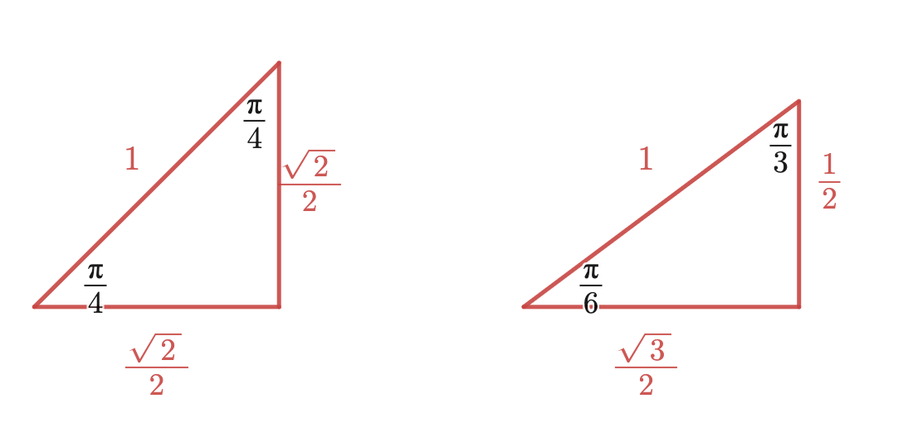
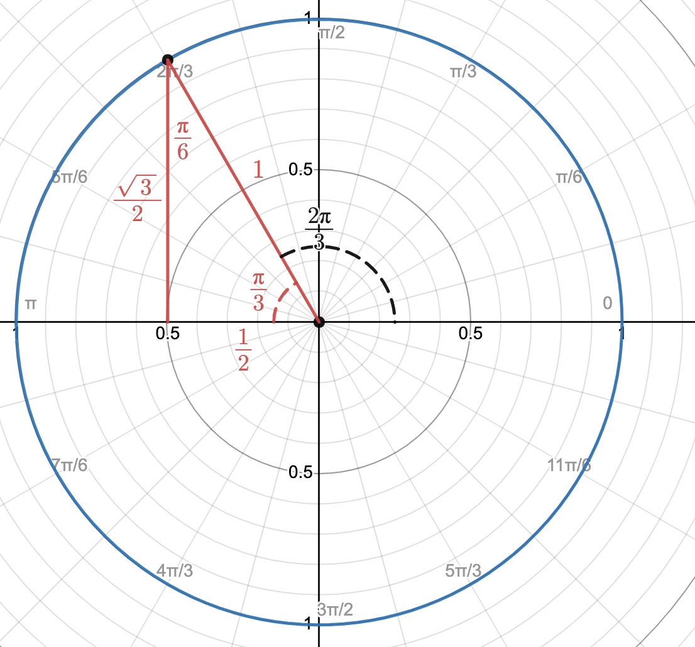

How are \(\sin(x)\text{,}\)\(\cos(x)\text{,}\) and \(\tan(x)\) defined?
How can we use trigonometric functions in modeling?
There are many relationships in which a pattern repeats itself over a set period of time, such as outside temperatures, hours of sunlight in a day, and tide levels. Trigonometric functions are useful in modeling these relationships.
Warm-Up1.6.1.
When using trigonometric functions in calculus, we use a measurement called radians. Address the questions below as completely as possible using the interactive provided.
What do you think “radians” (\(r\)) is a measurement of?
What is the difference between a positive radian measurement and a negative radian measurement?
How many radians trace out the entire circle of radius \(1\text{?}\) What is the conversion factor between radians and degrees?
What is a radian measure that corresponds to the point \((0,1)\text{?}\)\((-1,0)\text{?}\)\((0,-1)\text{?}\)\((1,0)\text{?}\)
What is the arc length of the segment of the circle traced out when \(r=1\text{?}\)
Subsection1.6.1The Unit Circle and Trigonometric Functions
The circle in Warm-Up 1.6.1 is called the unit circle. As \(r\) changes, the line connecting \((0,0)\) to the unit circle moves around the circle, eventually repeating itself. This repetition is the characteristic that allows us to define functions that repeat a pattern over time. Use the interactive below to determine the definitions of \(\sin(r)\text{,}\)\(\cos(r)\text{,}\) and \(\tan(r)\) before viewing the answers.
Figure1.6.1.
\(\sin(r)\)Answer.
For a value of \(r\text{,}\) you can draw a right triangle in the unit circle by drawing a vertical line up or down to the \(x\)-axis. \(\sin(r)\) is the height of that triangle. Equivalently, \(\sin(r)\) is the \(y\) value of the point on the unit circle associated with \(r\text{.}\)
\(\cos(r)\)Answer.
For a value of \(r\text{,}\) you can draw a right triangle in the unit circle by drawing a vertical line up or down to the \(x\)-axis. \(\cos(r)\) is the length of that triangle. Equivalently, \(\cos(r)\) is the \(x\) value of the point on the unit circle associated with \(r\text{.}\)
\(\tan(r)\)Answer.
For a value of \(r\text{,}\) you can draw a right triangle in the unit circle by drawing a vertical line up or down to the \(x\)-axis. \(\tan(r)\) is the slope of the triangle’s hypotenuse. Equivalently, \(\tan(r)\) is the slope of the line associated with \(r\) connecting \((0,0)\) to the unit circle.
Remark1.6.2.
As with any function, we can use any symbol to represent the input variable inside a trigonometric function. However, it is common to use the greek letter \(\theta\) (“theta”) to represent the input variable in these cases: \(\sin(\theta)\text{,}\)\(\cos(\theta)\text{,}\) and \(\tan(\theta)\text{.}\) The important thing to remember is that the output values of these functions come from the unit circle as described above.
If you are computing the value of trigonometric functions using technology, you’ll want to be sure the device you are using is measuring the input in radians. There may be times when it is useful to understand the values of trigonometric functions at special points on the unit circle. You can compute trigonometric values at any multiple of \(\dfrac{\pi}{4}\) or \(\dfrac{\pi}{6}\) just by remembering the lengths of two triangles:
\(\dfrac{\pi}{4}\)-\(\dfrac{\pi}{4}\) and \(\dfrac{\pi}{6}\)-\(\dfrac{\pi}{3}\) Right Triangles.

As seen in the unit circle, we can draw a right triangle within the unit circle for different values of \(r\text{.}\) When \(r\) is a multiple of \(\dfrac{\pi}{4}\) or \(\dfrac{\pi}{6}\text{,}\) that triangle will be one of the special triangles, from which we can compute the desired trigonometric value.
Example1.6.3.Computations in the Unit Circle.
We will compute trigonometric values of \(\dfrac{2\pi}{3}\text{.}\) The first step is to identify the picture of \(\dfrac{2\pi}{3}\) in the unit circle:

As the picture shows, we can then draw a right triangle within the unit circle by drawing a vertical line down to the input axis. We can then determine all of the angles of the triangle, and fill in each length, which tells us the coordinates of the point on the unit circle. Pay attention to whether the coordinates are positive or negative! These are exactly what define, sine, cosine, and tangent of the angle:
Answer the following questions without using technology:
Determine if \(\cos\left(\dfrac{5\pi}{4}\right)\) is positive, negative, or zero. Then compute the exact value.
Determine if \(\sin\left(\dfrac{7\pi}{6}\right)\) is positive, negative, or zero. Then compute the exact value.
Determine if \(\tan\left(-\dfrac{\pi}{3}\right)\) is positive, negative, or zero. Then compute the exact value.
Determine if \(\sin\left(-\pi \right)\) is positive, negative, or zero. Then compute the exact value.
What is the domain of \(\tan(\theta)\text{?}\) How do you know?
Subsection1.6.2Graphs and Transformations of Trigonometric Functions
When we graph trigonometric functions, we are graphing the output value for a given input angle \(\theta\text{.}\) Take a moment to try and sketch the graphs of \(\sin(\theta)\text{,}\)\(\cos(\theta)\text{,}\) and \(\tan(\theta)\) based on how these values change as \(\theta\) changes in the unit circle. Then check your answers with the graph below.
Transformations of trigonometric functions work as described in Subsection 1.3.3, and allow us to change different properties of a repeating pattern based on our observations. However, there is some different vocabulary that we use to describe the transformations in this context based on which graphical properties they change. The general form a transformation of \(\sin(x)\) and \(\cos(x)\) is
\begin{gather*}
A\sin\left(\dfrac{2\pi}{P}(x-H)\right) + V\\
A\cos\left(\dfrac{2\pi}{P}(x-H)\right) + V
\end{gather*}
Take a moment to describe what each transformation does on the graph of \(\sin(x)\) before viewing the answers.
\(A\)Answer.
This performs a vertical scale on the graph. If \(A \lt 0\text{,}\) it vertically reflects the graph. The value of \(|A|\) is called the amplitude and is half the distance between the maximum (\(MAX\)) and minimum (\(MIN\)) values of the function. It can be computed by \(|A| = \dfrac{MAX - MIN}{2}\text{.}\)
\(P\)Answer.
This contributes to the horizontal scale of the graph. It is called the period of the function, and determines how long it takes for the function to start repeating itself.
\(H\)Answer.
This performs a horizontal shift of the graph. It is called a phase shift of the function.
\(V\)Answer.
This performs a vertical shift of the graph. It is the \(y\) value over which the graph has vertical symmetry, and is called the average of the function. It can be computed by \(V = \dfrac{MAX + MIN}{2}\text{.}\)
Example1.6.4.Transformations.
We would like to model the outside temperature over one day. We will measure this as a function of \(t\) hours since midnight. We know the minimum temperature of \(43^{\circ}\)F occurs at midnight (\(t=0\)), and the maximum temperature is \(75^{\circ}\)F.
Since the minimum temperature occurs at \(t=0\text{,}\) we will use a transformation of \(\cos(x)\text{.}\) It is possible to use \(\sin(x)\text{,}\) but this would require a phase shift, where as using \(\cos(x)\) does not. So we will write a model of the form \(f(t) = A\cos\left(\dfrac{2\pi}{P}(t-H)\right) + V \text{.}\)
The amplitude is \(|A|=\dfrac{75-43}{2}=16\text{.}\) Since we’d like the minimum value to occur at \(t=0\text{,}\) we’ll let \(A=-16\text{.}\)
The average is \(V=\dfrac{75+43}{2}=59\text{.}\)
Our model is to repeat after one day (\(24\) hours), so the period should be \(P = 24\text{.}\) This means the horizontal scale is \(\dfrac{2\pi}{24}=\dfrac{\pi}{12}\text{.}\) Therefore, our model is
How are \(\sin(\theta)\text{,}\)\(\cos(\theta)\text{,}\) and \(\tan(\theta)\) defined?
Answer.
These functions are defined based on the coordinates of the unit circle associated with the angle \(\theta\text{.}\)\(\sin(\theta)\) is the \(y\) value, \(\cos(\theta)\) is the \(x\) value, and \(\tan(\theta)\)is the slope of the line connecting the point \((0,0)\) to the point on the unit circle.
Question1.6.6.
How can we use trigonometric functions in modeling?
Answer.
Trigonometric functions are useful in modeling relationships that repeat a pattern over a specific period of time. The maximum/minimum values, average value, and period can all be customized using transformations.
Exercises1.6.4Exercises
1.
Is there an angle \(\theta\) such that \(\sin(\theta) \gt 0 \) and \(\tan(\theta) \lt 0 \text{?}\) Give an example if one exists, or explain why no such example is possible. If an example exists, illustrate your example with a sketch within the unit circle.
2.
Is there an angle \(\theta\) such that \(\sin(\theta) = 0 \) and \(\tan(\theta) \lt 0 \text{?}\) Give an example if one exists, or explain why no such example is possible. If an example exists, illustrate your example with a sketch within the unit circle.
3.
Sleepiness has two cycles, a circadian rhythm with a period of \(24\) hours and an ultradian rhythm with period of \(4\) hours. Both have a phase shift of \(0\) (in relation to cosine). The average value of the circadian rhythm is \(3\) sleepiness units and the average value of the ultradian rhythm is \(1\) sleepiness unit. The amplitude of the circadian rhythm is \(2\) sleepiness units, and that of the ultradian rhythm is \(0.5\) sleepiness units.
Find models for sleepiness over the course of a day due to the circadian rhythm \(c(t)\) and ultradian rhythm \(u(t)\text{,}\) where \(t\) is measured in hours since midnight.
to describe all of the solutions to \(\sin(x)=\dfrac{1}{2}\text{.}\) How many solutions are there on the domain \([0,\pi]\text{?}\) How many solutions are there on the domain \([-\pi,0]\text{?}\)